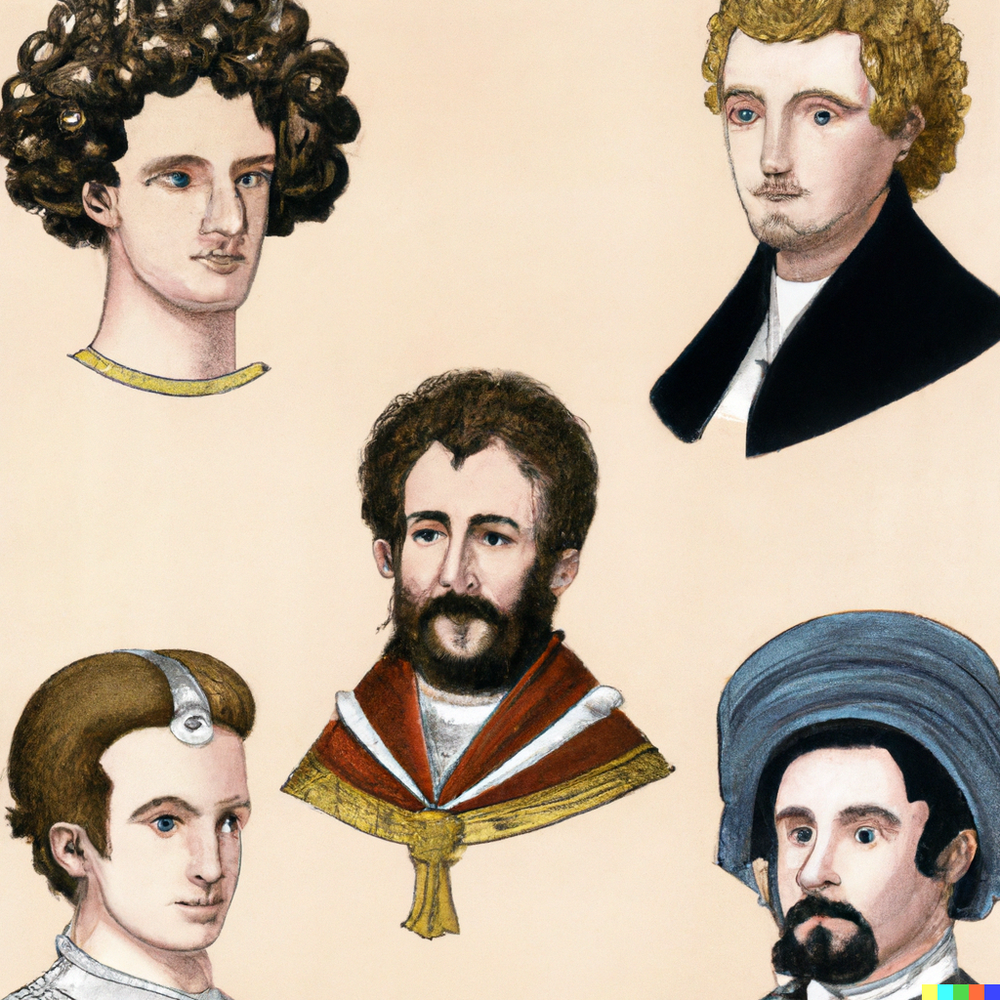
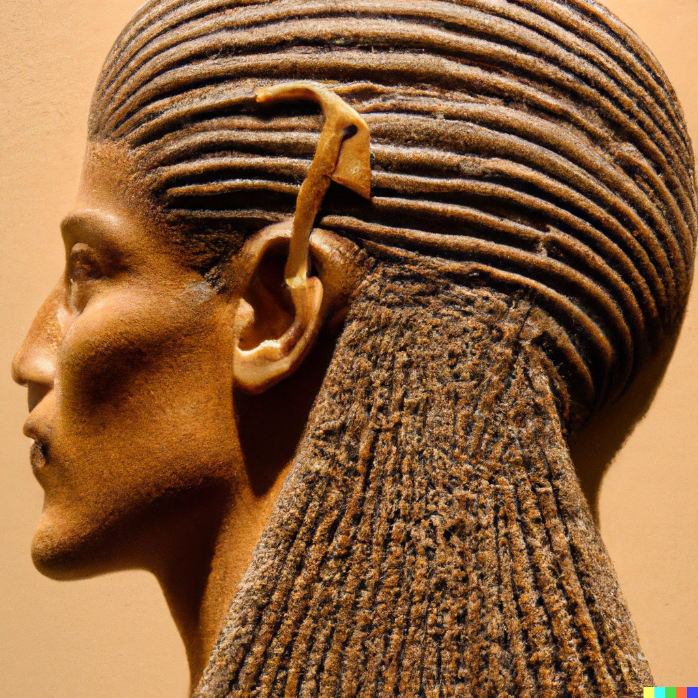
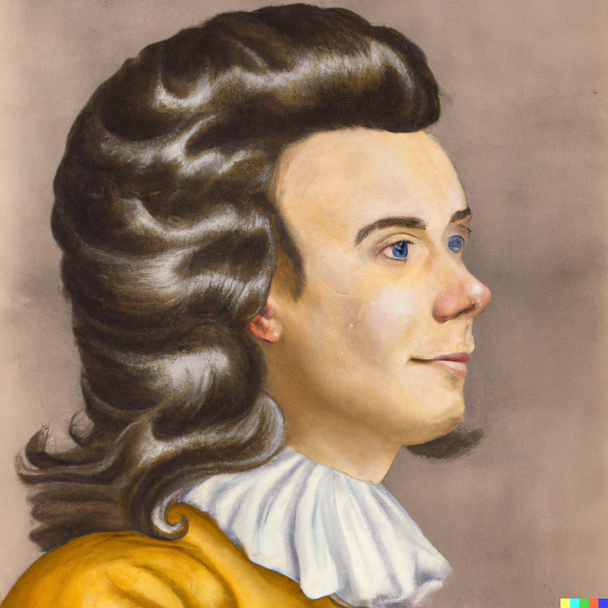
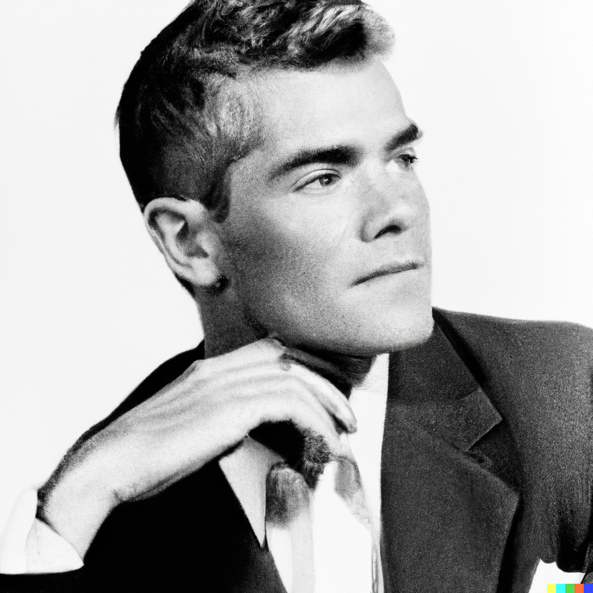
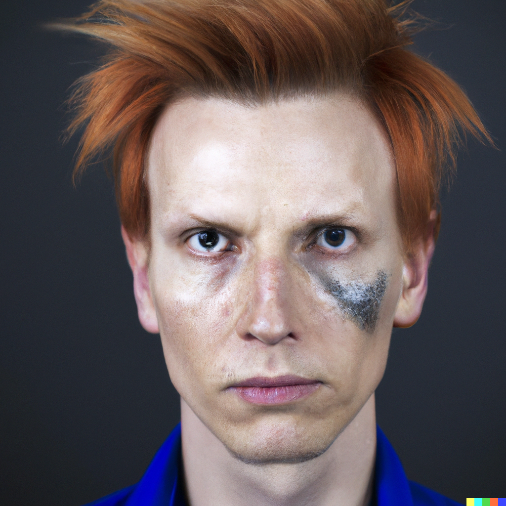
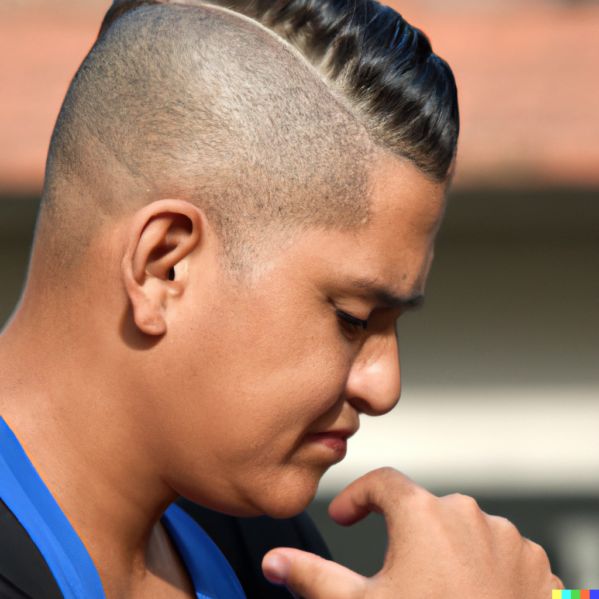

The Evolution of Men's Hairstyles: A Journey Through Time
Posted on:
Introduction
Throughout history, men's hairstyles have been an essential element of individual expression, societal trends, and cultural identity. As we take a journey through time, we'll explore how men's hairstyles have evolved across different eras and what influenced these changes.
Ancient Civilizations: Egypt, Greece, and Rome
In ancient Egypt, men often shaved their heads for practical reasons, such as hygiene and protection from lice. However, they also wore wigs made from human hair, animal hair, or plant fibers for special occasions or as status symbols. Men in ancient Greece and Rome sported a variety of hairstyles, from short and curly to long and straight, often adorned with wreaths or headbands.
The Middle Ages and Renaissance: Nobility and Knights
During the Middle Ages and the Renaissance, men's hairstyles reflected social status and occupation. Noblemen and knights often wore their hair long and well-groomed, sometimes with elaborate braids or curls. Meanwhile, shorter hairstyles were common among the lower classes and those engaged in manual labor.
The 18th and 19th Centuries: Wigs, Powder, and Sideburns
The 18th century saw the rise of wigs and powdered hair, which were popular among European nobility and upper classes. Men's hairstyles in the 19th century shifted toward more natural looks, with sideburns and facial hair becoming popular. The Victorian era saw the emergence of the pompadour, a hairstyle characterized by a high, swept-back front, which remained popular into the early 20th century.
The 20th Century: Diversity and Rebellion
The 20th century saw an explosion of diversity in men's hairstyles, reflecting shifting social values and the influence of popular culture. Key trends included the following:
- 1920s-1930s: The slicked-back look, influenced by Hollywood stars like Clark Gable and Cary Grant, was popular during this time.
- 1950s: The rockabilly quiffs and pompadours, inspired by musicians such as Elvis Presley and Johnny Cash, became fashionable.
- 1960s-1970s: Countercultural movements popularized long hair, afros, and shaggy styles, while the mod subculture embraced sharp, geometric cuts.
- 1980s: Punk-inspired styles, such as mohawks and mullets, gained prominence, while pop culture icons like David Bowie and Michael Jackson experimented with androgynous looks.
- 1990s: The grunge movement brought disheveled, unkempt hairstyles to the forefront, while the hip-hop community favored braids, cornrows, and high-top fades.
The 21st Century: Individuality and Experimentation
In the 21st century, men's hairstyles continue to evolve, with individuality and personal expression taking center stage. Some popular trends include:
- Undercuts: Characterized by short sides and a longer top, undercuts have become a versatile and popular choice for many men.
- Man buns: Long hair gathered into a bun at the back of the head has seen a surge in popularity, particularly among hipster and bohemian circles.
- Fades: Gradually tapering hair on the sides and back of the head, often combined with intricate designs, has become a staple in barbershops worldwide.
- Natural textures: Embracing natural hair textures, such as curls and waves, has gained traction as more men prioritize hair health and low-maintenance styling.